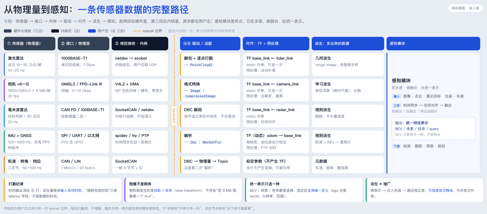

这张图把一条数据从物理量到感知拆成七段。横着看是“被谁加工”，竖着看是“同一段里不同传感器怎么落地”。
| 段 | 落在哪 | 谁的地盘 | 换它要动谁 |
|---|---|---|---|
| ① 传感器 | 传感器内部 | 硬件 / 固件 | 换传感器、重标定 |
| ② 接口 | 线缆 / 收发器 | 硬件 | 换线束、换收发器 |
| ③ 内核 | 内核态 | 内核 / 驱动模块 | 改驱动模块、升级内核 |
| ④⑤ 驱动 | 用户态 | 你写的节点 | 换 SDK、改解析 |
| 对齐 | 用户态 | 标定配置 + 预处理节点 | 改 TF / 改预处理 |
| 派生 | 用户态 | 派生节点 / SDK | 换模型、换几何方法 |
| 感知 | 用户态 | 感知团队 | 换网络、换表示 |
七段单独讲，每一段都容易懂；难的是段与段之间的责任边界——谁该解析、谁该打戳、谁该做坐标变换、谁该做融合。这些边界一旦模糊，就会同时出现两种病：把驱动当应用（不敢容器化、不敢重启），或者把应用塞进驱动（换个传感器就要改感知）。
横向排开之后，边界变成一条竖线，看得见、也争得清。
横着读：一行就是一条链路，从“这颗传感器输出什么”一直走到“它怎么进入感知”。五行分别是激光雷达、相机、毫米波雷达、IMU+GNSS、底盘 CAN。
竖着读：一列就是一类工作。③ 列全是内核子系统，④⑤ 列全是“解析 → 打戳 → 发布”，对齐列全是 TF 与预处理，派生列区分了几何、学习、规则、元数据。
看边界：橙虚线只有一条，卡在 ③ 与 ④ 之间。左边是特权层，右边是普通进程；跨过去之后，再没有任何一层能直接碰寄存器。
底盘 CAN 那一行的“对齐”格写的是“标定参数（不产生 TF）”。轮速、转角、档位不参与坐标变换，它们只被别的模块引用（比如曲率、里程计）。画图时最容易被顺手填成一条 TF，那就是错的。
接口不是“越新越好”，而是被数据量逼出来的。摄像头单路 ~180 MB/s，点云 ~5–20 MB/s，轮速只有几字节——它们不可能共用一根线。
| 传感器 | 数据率 | 图上接口 | 为什么是它 |
|---|---|---|---|
| 激光雷达 | 10–30 万点/帧 · 10–20 Hz | 1000BASE-T1 | 点云走 IP，1 Gbps 刚好装下 |
| 相机 ×6–12 | 1920×1080×3 ≈ 6 MB/帧 · 30 fps | GMSL2 / FPD-Link III | 单路就超过 1 Gbps，只能上 SerDes 专线 |
| 毫米波雷达 | 目标列表 / 4D 点云 · 20 Hz | CAN FD / 100BASE-T1 | 按输出形态二选一 |
| IMU + GNSS | 100–1000 Hz · < 10 KB/s | SPI / UART / 以太网 | 数据小，但要硬时间戳 |
| 轮速 · 转角 · 档位 | 几字节 · 50–100 Hz | CAN / LIN | 最便宜、最稳 |
GMSL2 不是以太网。它是点对点私有 SerDes：同轴、可同时供电和反向控制，但不能组网、不能跑 IP。图上把它和以太网画在同一段，是因为它们同属“物理层专线”，不是同一种协议。真实的路径是：摄像头 → 同轴 → 域控解串 → 以太网骨干。
阶梯中间有断层。常见的 10BASE-T1S（10 Mbps 多点）、100BASE-T1（100 Mbps）、CAN XL（约 20 Mbps）没有单独列出，但雷达那一行的 “100BASE-T1” 就落在断层里。读图时按“量级”理解，不要按位置量距离。
物理线进到域控之后，第一站永远是内核。不同的线对应不同的子系统，但出口是同一种东西：一个 fd。
| 线的种类 | 内核子系统 | 用户态拿到什么 |
|---|---|---|
| 以太网（雷达 / 激光） | netdev → socket | UDP 包，需要自己重组 |
| 相机同轴（GMSL2） | V4L2 + DMA | 帧缓冲（mmap / DMABUF），零拷贝 |
| CAN / CAN FD | SocketCAN | can_frame：8 字节 + ID |
| IMU（SPI） | spidev | 原始寄存器字节 |
| GNSS（UART） | tty | NMEA / 私有二进制流 |
这一句是 ③ 段最重要的性质。SocketCAN 交给你的是一帧 8 字节和它的 ID，“这是左前轮速 23.5 km/h”这个语义不在内核里——它要靠 DBC 查表才能解出来。同理，V4L2 交给你的是像素，不是“这是一辆卡车”。
所以 CAN 链路上其实有两次解析：第一次在内核把电平拆成帧，第二次在用户态（或中间件）按 DBC 把帧拆成物理量。图上把第二次标成“这是第二次解析”，就是为了防止把两层混成一层。
相机这一路最容易误解。ISP（去马赛克、曝光、白平衡）通常在内核或专用硬件里完成，用户态拿到的是已经成形的图像。6 MB × 30 fps 不可能靠 memcpy 搬，所以走的是 DMA + mmap / DMABUF；ROS 2 里再叠加 intra-process 与 loaned message，才能把“过一遍 topic”的成本压下去。
跨过 syscall 边界，进入你真正要写代码的地方。这一段的全部工作可以压缩成三件事。
fd = open("/dev/video0") | socket() | read(can_fd) | read(spi_fd) ← ③ 的出口
──────────────────────── syscall 边界 ────────────────────────
parse(buf) → points | image | frame ← ④ 解析
stamp = driver_time(buf) ← ④ 打戳
publish(topic, msg, frame_id) ← ⑤ 发布
时间戳记的是采样时刻，不是“你收到它的时刻”。③ 交出来的数据里通常已经带了硬件或驱动时间（PTP、PPS、逐点时间），④ 的职责是把它保留并换算到统一时钟，而不是重新取一次 now()。
一旦挪到订阅端，就等于用“收到的时间”冒充“采样的时间”，后面所有插值、配对、运动补偿都是在错误的基准上做算术——误差不会报警，只会让结果慢慢偏。
能单独跑、还能把数据吐出来 → 里面有一颗驱动核（如 Livox SDK、librealsense），ROS 节点只是外壳；不能 → 它是“驱动 + 适配”揉在一起，别把它当纯应用，也别把它当纯驱动。
工程上的拆法：driver_core（不依赖 ROS，可单测）+ ros_node（薄壳：参数、msg 转换、QoS、生命周期）。这样“算不算驱动”就不再是语义争论。
对齐解决两件事：空间——把各路放到同一个坐标系；时间——把不同频率的采样凑到同一时刻。这一列里 TF 管空间，预处理管数据本身。
| static（外参） | dynamic（位姿） | |
|---|---|---|
| 描述什么 | 传感器装在车上的哪个位置、朝哪 | 车此刻在 odom / map 里的位姿 |
| 变不变 | 标定一次，永久有效 | 每帧都变 |
| 发几次 | 只发一次（static_transform_publisher） | 按频率持续发 |
| 谁产生 | 标定文件 | 定位 / 里程计 |
| 消费者怎么用 | tf2_ros::Buffer::transformPointCloud(msg, "base_link") | |
因为外参只有一份，放成一条 TF 就够了：谁需要谁去查，不产生任何数据搬运。中转 topic 的代价是实打实的——多一次序列化、多一跳延迟、多一份带宽；对 6 MB 的图像尤其不划算。
更重要的是：图像根本不存在“ego 系的图像”。像素不能旋转平移。相机侧真正发生的是把 BEV 上的 3D 点投影到图像上采样（view transform），不是把图像本身变到车体系。所以“先变到 ego 再分发”这条路，对点云成立，对图像不成立。
| 手段 | 适合什么 | 代价 |
|---|---|---|
| TF 树 + 各取所需 | 外参、位姿；点云 / 目标的换系 | 几乎为零，推荐默认 |
| 预处理 topic | 去畸变、deskew、时间同步打包、降采样 | 多一跳，但只做一次 |
| 共享内存 / 零拷贝 | 多下游要同一份大结果（BEV 特征） | 实现复杂，跨机不可用 |
“订阅原始 topic、产出更多数据”这个形态成立，但要先分清产出的到底是什么。按信息从哪来分，是五类，不是两类。
| 类型 | 例子 | 信息从哪来 | 可信度 |
|---|---|---|---|
| 几何 | 双目视差、三角化、IPM、range image | 已有观测的重新组织 | 高（可推导） |
| 学习 | 单目深度、光流、分割、occupancy | 训练集注入的先验 | 中（有偏） |
| 规则 / 物理 | 轮速+IMU→里程计、GNSS+IMU→组合 | 运动学、物理约束 | 中（随时间累积误差） |
| 多源融合 | 前 / 后 / 特征级融合、伪点云 | 多源独立观测 | 唯一真正增信息的 |
| 元数据 | 置信度、质量分、有效 mask、尺度因子 | 对数据本身的评估 | 跟随主数据 |
三种情况要分开看：换表示（几何，理想可逆）、注入先验（学习，引入偏差，且偏差与 LiDAR 误差不独立）、融合独立源（唯一真正增加信息）。所以单目深度不是“多了一颗传感器”，而是“多了一个先验”——下游若把它当独立观测，两个误差会按同一个方向灌进状态估计。
单目深度模型（MiDaS 一类）输出多是相对深度 / 逆深度，尺度未知，直接当米用就是全错。要变绝对尺度，只能靠已知基线（双目）、已知物体尺寸、地面假设，或与 LiDAR / 轮速对齐求 scale。
双目则受限于 Z = f·B/d，误差 σZ = Z²/(fB)·σd，随距离平方增长：f=1000 px、B=0.5 m、Z=50 m 时视差只有 10 px，0.5 px 的视差误差就带来 ~2.5 m 的距离误差；弱纹理、重复纹理、强光还会直接失效。
图的最后一列是一整块，不是逐行五个格子。这是刻意的：如果每行各放一个感知格子，图会暗示“每一路各自跑一遍感知”；合并成一整块，才表达出“多路汇入同一个模块”。
时间同步：不同频率的采样先对齐到同一时刻（硬触发 / PTP / 插值）。空间对齐：用 TF 把各路放到同一坐标系。融合：前融合（原始数据层）、后融合（目标层）、特征级融合（网络中间层）。
顺序不能乱：先同步再对齐再融合，否则你是在精确地对齐一个错误的时刻，或者把两个不同坐标系的东西叠在一起。
可选的统一表示至少有四种：BEV（俯视栅格）、体素（3D 网格）、柱体（Pillar）、query（一组可学习的 3D 参考点，DETR 式）。选哪种是精度、算力、部署形态的取舍，不是先进与落后的区别。
但有一点必须咬死：选定之后，网格定义全局唯一——是 ego-centric（随车动）还是 world-centric（全局固定），分辨率、覆盖范围、朝向，只能用同一份配置。两个模块各定义一套，即使外参完全一致，两张图也叠不上。
误解一：“有一个中间节点统一监听所有传感器”。没有。每颗传感器一个驱动节点，中间是 topic 不是节点；真正存在的“中间层”只有管理框架（启停、健康检查）和转发工具（relay、rosbag、bridge），它们都不解析。
误解二：“坐标变换应该做成中转 topic”。外参只有一份，放成静态 TF 就够；中转 topic 是把“一次矩阵乘法”换成了“一次序列化 + 一跳延迟”。只有多下游共享同一份重计算结果（deskew、BEV 特征）时，才值得。
误解三：“先把每一路都变成 BEV，再融合”。大多数 BEV 方法是“图像 lift 到视锥 → 投到 BEV 网格 → 聚合”，融合发生在表示构建的过程中，不是各自建好再拼。
frame_id，且能在 TF 树里查到；stamp 在 ④ 打，不晚于 read() 之后；model_version 与 latency，且标注是“推断”还是“测量”；| 文件 | 说明 |
|---|---|
assets/2026-11-传感器到感知-图1-从物理量到感知.png | 图 1，七段架构，3306×1458 |
assets/_make_sensor2perception_fig.html | 图 1 的源文件（自包含 HTML） |
assets/_make_sensor2perception_note.html | 本册 PDF 的排版源 |
assets/_make_sensor2perception_qa.html | 《疑问记录》PDF 的排版源 |
assets/_render_sensor2perception.sh | 一键重出：图 + 两份 PDF |
2026-11-传感器到感知-疑问记录.md / .pdf | 配套的问题记录册，按 Qn 顺延 |
cd 笔记/三维视觉/assets ./_render_sensor2perception.sh fig
cd 笔记/三维视觉/assets ./_render_sensor2perception.sh pdf